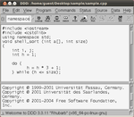
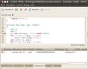
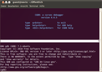

GDB
Dieser Artikel wurde für die folgenden Ubuntu-Versionen getestet:
Ubuntu 16.04 Xenial Xerus
Zum Verständnis dieses Artikels sind folgende Seiten hilfreich:
GDB  (GNU-Debugger) hat sich zum Standard-Debugging-Werkzeug unter Unix/Linux gemausert und hilft dabei, Programmfehler (Bugs) aufzufinden. Er unterstützt in C, C++, FORTRAN, Pascal, Modula-2, Ada und D geschriebene Programme. Um eine bestmögliche Unterstützung zu garantieren, sollten spezielle Debug-Informationen angehängt werden, in der GCC entspricht dies der Option
(GNU-Debugger) hat sich zum Standard-Debugging-Werkzeug unter Unix/Linux gemausert und hilft dabei, Programmfehler (Bugs) aufzufinden. Er unterstützt in C, C++, FORTRAN, Pascal, Modula-2, Ada und D geschriebene Programme. Um eine bestmögliche Unterstützung zu garantieren, sollten spezielle Debug-Informationen angehängt werden, in der GCC entspricht dies der Option -g [2]. Wollen installierte Programme nach Fehlern untersucht werden, sollte dafür ein spezielles Debugging-Paket installiert werden, welches in der Regel <Paket>-dbg genannt wird, z. B. pidgin-dbg.
Installation¶
Sofern nicht bereits Bestandteil der Distribution, muss folgendes Paket installiert [1] werden:
gdb (universe)
 mit apturl
mit apturl
Paketliste zum Kopieren:
sudo apt-get install gdb
sudo aptitude install gdb
Grafische Oberflächen¶
Es existieren zwar einige direkte Frontends für GDB, aber prinzipiell unterscheiden sie sich nicht grundlegend von der Bedienung GDBs auf der Kommandozeile, weshalb nicht näher auf sie eingegangen wird. Andererseits beruht die Debug-Funktionalität der meisten Entwicklungsumgebungen auf GDB (beispielsweise besitzt Emacs einen „GUD mode“) so dass die Frontends hauptsächlich für den externen Einsatz gedacht sind.
ddd¶

Ein großer Funktionsumfang wird vom klassischen Data Display Debugger unterstützt. Er wirkt aufgrund des Toolkits LessTif auf den meisten Desktopumgebungen etwas veraltet. Er kann durch das gleichnamige Paket nachinstalliert [1] werden:
ddd (universe)
mit apturl
Paketliste zum Kopieren:
sudo apt-get install ddd
sudo aptitude install ddd
nemiver¶

Eine moderne und sehr intuitive Oberfläche bietet nemiver, der das Ziel verfolgt, sich möglichst gut in GNOME zu integrieren. Weitere Infos finden sich auf der Projektseite . Er kann durch folgendes Paket installiert werden [1]:
nemiver (universe)
mit apturl
Paketliste zum Kopieren:
sudo apt-get install nemiver
sudo aptitude install nemiver
CGDB¶
 Wer bei der Konsole bleiben will, aber trotzdem eine mächtigere Benutzerschnittstelle haben möchte, für den bietet sich der CGDB an. Er basiert auf ncurses und ist dadurch ein reines Terminalprogramm [3]. Folgendes Paket muss installiert werden [1]:
cgdb (universe)
mit apturl
Paketliste zum Kopieren:
sudo apt-get install cgdb
sudo aptitude install cgdb
Direkte Interaktion¶
Grundlegende Benutzung¶
Nachdem alle Quelldateien mit der Option -g kompiliert wurden [2] (eine grundlegende Funktionalität ist auch ohne Debug-Informationen verfügbar), muss GDB noch im Terminal gestartet werden [3]. Dies geschieht durch
gdb
Als nächstes kann die Programm-Datei geladen werden:
(gdb) file <programmname>
Das Programm selbst muss noch einmal explizit gestartet werden. Dabei können auch Parameter übergeben werden:
(gdb) run arg1 arg2 ... <infile
Das Programm nur bis "main" ausführen. Dabei können auch Parameter übergeben werden:
(gdb) start arg1 arg2 ...
Wenn man die Ausführung der Programmdatei abbrechen möchte, kann man das mit kill tun:
(gdb) kill
GDB benötigt wieder eine weitere Aufforderung
(gdb) quit
Unterbrechungen¶
Die Ausführung kann entweder zur Laufzeit durch Strg + C unterbrochen werden, oder aber über vorher gesetzte Haltepunkte:
| Haltepunkte setzen | ||
| Befehl | Beispiel | Wirkung |
break [<datei>:]<zeile> | break program.c:19 | Stoppt bei Erreichen der genannten Zeile. Wenn das Projekt nur aus einer Datei besteht, kann der Dateinamen weggelassen werden |
break <funktion> | break foo | Stoppt beim Aufruf der Funktion (nur C). |
break <member/funktion>(<argumenttypen>) | break widget::foo(int, int) | In C++ muss immer die volle Signatur angegeben werden, auch wenn eine Funktion nicht überladen ist. |
Wenn tbreak anstelle von break verwendet wird, stoppt GDB nur einmal, danach wird der Haltepunkt wieder gelöscht.
Wer die gesetzten Haltepunkte erfahren möchte, erhält über info breakpoints eine nummerierte Liste, mittels ignore <NUMMER> <ANZAHL> können einzelne über <ANZAHL> Durchläufe ignoriert werden, mittels disable entfernt man sie komplett.
Programmfluss beeinflussen¶
GDB zeigt zwar immer an, wo gestoppt wurde, meist braucht ein Mensch die umgebenden Codezeilen. Die 10 erhält man mit list. Danach kann die Ausführung manuell gesteuert werden.
| Programmfluss beeinflussen | ||
| Befehl | Beschreibung | |
continue | Weiterlaufen lassen bis zum nächsten Unterbruch | |
next | Nur eine einzelne Zeile ausführen, in der aktuellen Ebene bleiben | |
step | Führt die nächste Linie aus, springt aber in aufgerufene Funktionen. | |
finish | Beendet die Funktion und kehrt zum Aufrufer zurück. | |
Nähere Auswertungen¶
Oft ist es sehr aufschlussreich, die Stapelung der Funktionsaufrufe zu erfahren.
Dazu wird backtrace verwendet:
(gdb) backtrace #0 func2 (x=30) at test.c:5 #1 0x80483e6 in func1 (a=30) at test.c:10 #2 0x8048414 in main (argc=1, argv=0xbffffaf4) at test.c:19 #3 0x40037f5c in __libc_start_main () from /lib/libc.so.6
Variablen können durch den print-Befehl gezeigt und durch set verändert werden:
(gdb) print x $1 = 900 gdb set var x = 3 gdb print x $4 = 3
 Übersichtsartikel
Übersichtsartikel- Erstellt mit Inyoka
-
 2004 – 2017 ubuntuusers.de • Einige Rechte vorbehalten
2004 – 2017 ubuntuusers.de • Einige Rechte vorbehalten
Lizenz • Kontakt • Datenschutz • Impressum • Serverstatus -
Serverhousing gespendet von